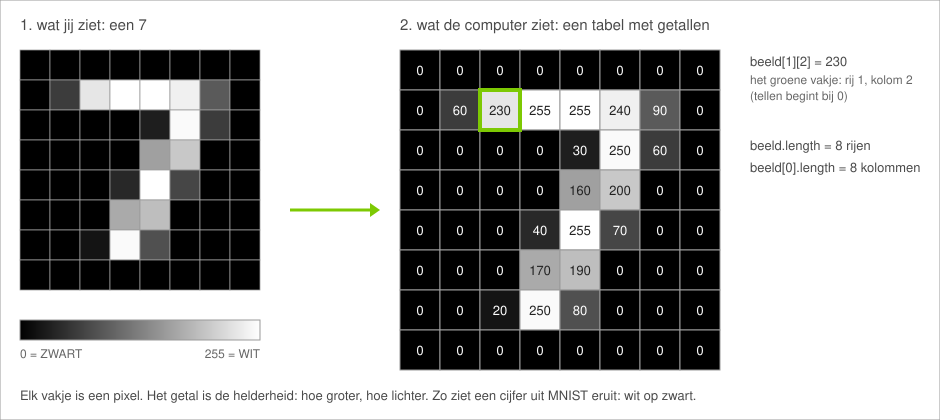
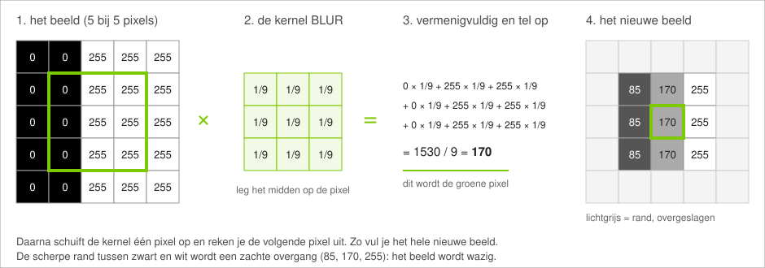
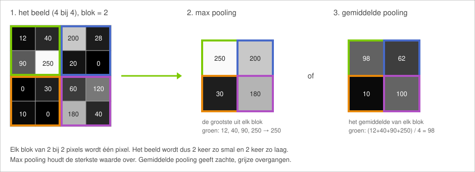
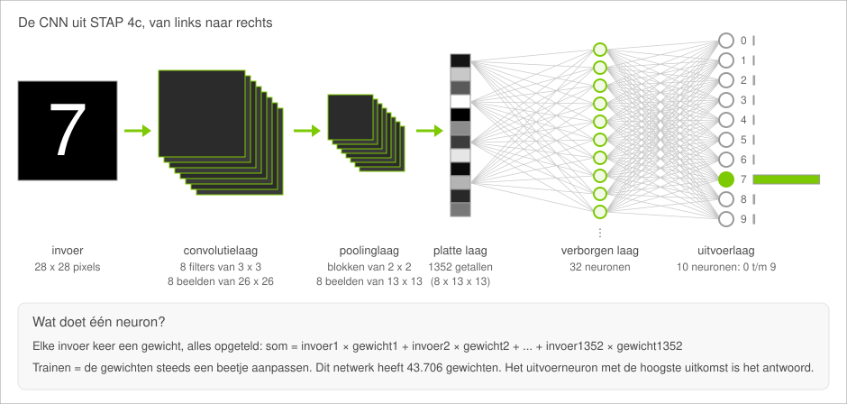

Een eigen CNN
In deel 1 bouw je de bouwstenen waarmee computers beelden bekijken: een drempel, filters en pooling. In deel 2 bouw je een neuraal netwerk dat handgeschreven cijfers herkent, zoek je uit welke cijfers het moeilijk vindt en test je het met je eigen tekening of webcam. Jouw functies uit deel 1 maken dat beeld klaar voor het netwerk.
Hoe ziet een computer een beeld?
Voor een computer is een foto een tabel met getallen. Elk vakje is een pixel met een helderheid: 0 is zwart, 255 is wit, alles daartussen is grijs. Een kleurenfoto heeft drie van zulke tabellen (rood, groen en blauw), maar wij werken met grijs. Computer vision is het vakgebied dat computers leert begrijpen wat er op zo'n tabel getallen staat.

Filters (convolutie)
Een filter bewerkt elke pixel met behulp van zijn buren. Het filter is een klein raster van 3 bij 3 getallen, de kernel. Je legt het midden van de kernel op een pixel, vermenigvuldigt de 9 pixels eronder met de getallen in de kernel en telt alles op. Die som is de nieuwe pixel. Dat over het hele beeld schuiven heet convolutie.

Met andere getallen in de kernel krijg je een ander effect. BLUR heeft overal 1/9: de nieuwe pixel is het gemiddelde van 9 pixels, dus het beeld wordt wazig. RANDEN_VERTICAAL heeft links -1, -2, -1 en rechts 1, 2, 1: hij trekt de linkerkant af van de rechterkant. In een egaal vlak is de som 0 (zwart), op een rand is hij groot (wit). Randen zijn belangrijk, want de vorm van iets bestaat uit randen.
Pooling
Bij pooling maak je een beeld kleiner. Je verdeelt het beeld in blokjes en maakt van elk blokje één pixel. Bij max pooling houd je per blokje de grootste waarde over: wat belangrijk is (een sterke rand) blijft zichtbaar. Bij gemiddelde pooling neem je het gemiddelde van het blokje: dan krijg je zachte, grijze randen. Een netwerk hoeft na pooling minder getallen te bekijken, en het maakt minder uit of iets een paar pixels verschoven is.

Wat is een neuraal netwerk?
Een neuraal netwerk bestaat uit neuronen. Een neuron rekent een som uit: elke invoer keer een gewicht, alles opgeteld. Neuronen zitten in lagen: de uitkomsten van de ene laag zijn de invoer van de volgende. De laatste laag, de uitvoerlaag, heeft hier 10 neuronen, één per cijfer. Het neuron met de hoogste uitkomst is het antwoord. Lagen tussen de invoer en de uitvoerlaag heten verborgen lagen.

Bij het trainen laat je het netwerk heel veel voorbeelden zien waarvan je het goede antwoord weet. Na elk voorbeeld past het netwerk zijn gewichten een klein beetje aan, zodat het de volgende keer beter scoort. Eén keer alle voorbeelden langs heet een epoch. Een deel van de voorbeelden houden we apart als testdata: daarmee meten we de accuracy, het percentage dat het netwerk goed heeft op cijfers die het nog niet gezien heeft.
Wat is een CNN?
Een CNN (convolutioneel neuraal netwerk) is een neuraal netwerk dat begint met convolutie- en poolinglagen: precies de bouwstenen uit deel 1. Het verschil is dat jij in deel 1 de getallen in de kernels zelf kiest. Een CNN zoekt die getallen tijdens het trainen zelf, zodat de filters zoeken naar wat helpt om cijfers te herkennen.
De data
Het netwerk leert van 15.000 handgeschreven cijfers uit de MNIST-dataset, een bekende verzameling die veel gebruikt wordt om AI te testen. Elk cijfer is 28 bij 28 pixels: een wit cijfer op een zwarte achtergrond, met zachte grijze randen. Het cijfer staat altijd in het midden en is altijd ongeveer even groot. 85% van de cijfers gebruikt het netwerk om van te leren, 15% is testdata.
Voorbewerking
Jouw tekening of webcambeeld ziet er heel anders uit dan een MNIST-cijfer: groter, donkere inkt op licht papier, ergens in het vak en soms met ruis (losse stipjes). Een netwerk werkt alleen goed op beelden die lijken op de beelden waarvan het geleerd heeft. Daarom maak je elk nieuw beeld eerst zo klaar dat het op de trainingsdata lijkt. Dat heet voorbewerking. Daarvoor gebruik je je eigen functies uit deel 1.
sketch.js. Deel 1 (praktijkles 3) is STAP 1 tot en met 3, deel 2 (praktijkles 4) is STAP 4 tot en met 6. Teken je cijfers groot. Schrijf voor de webcam met een dikke zwarte stift op wit papier.